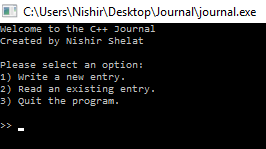
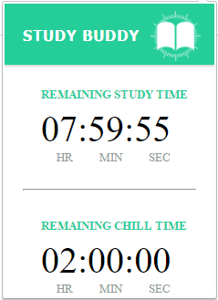
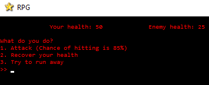

I created a password-protected, encrypted journal with C++ that can be operated from the command terminal. It uses file I/O to read and write user entries. I am currently working on adding more functions to my program, such as spell-checking, multiple-user capability, and time-sensitive reading windows.

In October 2016, I participated in TrojanHacks, a hackathon at USC, where my team of three and I designed and developed an extension for Google Chrome that helps people study. It features a countdown clock which records how much time the user has left to study, as well as a second clock which only runs when the user in on a website that is distracting to them. The user inputs a list of websites to be "blacklisted" and marked as distracting. When either timer runs out, a random GIF is shown to the user which either congratulates them for working hard or criticizes them for wasting to much time. Since this project is still in development and hasn't been approved for public release by the whole team, it unfortunately does not have a GitHub link embedded in the photo to the right.

I created a turn-based text game that can be operated from the command terminal. It allows users to create accounts and records the time passed since they last logged in. It uses text templates to populate the world with monsters that the player can battle for gold and glory.